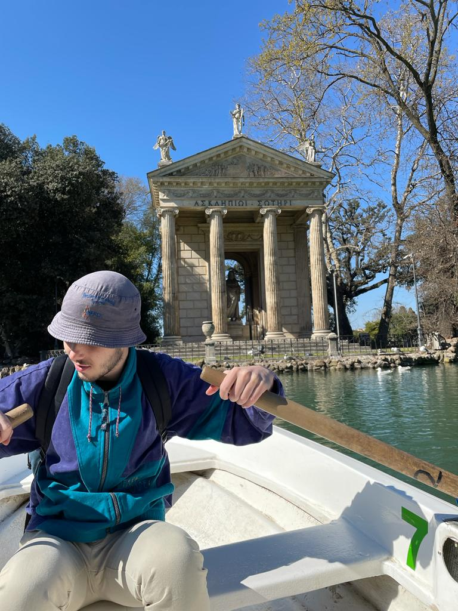

Rome, ville chargée d’histoire est une destination super romantique à visiter dès la mi-mars. Avec son patrimoine 🏛️, sa gastronomie 🍝, et sa vie nocturne 🎉, elle a tout pour vous faire passer de merveilleuses vacances. Une petite visite du Colisée, des bonnes Spaghetti alla Carbonara chez Miscele e Fuoco et pour finir une balade en barque à la Villa Borghèse. Rome est une ville qui a beaucoup à offrir, et je vais vous le prouver !
Quand on visite Rome il y a des passages obligés.
Le Colisée, monument extraordinaire remontant à l’an 72 qui accueillait les combats de gladiateurs. Il est considéré comme le plus grand amphithéâtre de l’Empire romain au monde.
Le Forum romain, qui comporte un grand nombre d’édifices anciens et temples du gouvernement de Rome. C’était le centre politique, commercial et religieux de la Rome antique.
Le Vatican et la place Saint-Pierre, pour admirer les colonnes et la Basilica San Pietro. À l’intérieur, ne manquez pas la Chapelle Sixtine et sa fresque peinte par Michel-Ange.
Le quartier de Trastevere, le plus tendance et « bobo », authentique quartier aux couleurs chatoyantes qui a su conserver tout son charme.
La fontaine de Trévi. Nichée sur une petite place modeste, la plus grande et plus belle fontaine de Rome a fait peau neuve ! La tradition veut que l’on y jette 2 pièces, une pour faire un vœu et l’autre pour être sûr de retourner à Rome.
Le Panthéon, une merveille architecturale construite pour les divinités de la mythologie. Là repose l’artiste Raphaël et le premier président d’Italie entre autres. À l’intérieur, admirez son impressionnante coupole et le sol pavé de marbre coloré.
La Piazza Navonna abrite la fontaine des Quatre-Fleuves ainsi que l’église Sainte-Agnès-en-Agone. De style baroque, elle fait partie des plus belles places de Rome.
Top 15 des activités à faire à Rome !
Mon coup de coeur : La Villa et la Galleria Borghèse

Visiter la villa Borghese est un incontournable de Rome. C'est le plus vaste parc municipal de la ville, avec ses 80 hectares sur la colline du Pincio.
Il existe 9 entrées pour venir la visiter, ces entrées la connectent aux quartiers centraux de la ville : Salario, Flaminio et Pinciano.
La Galerie Borghese est sans aucun doute l'un des plus beaux musées de la capitale ! Ce musée regroupe de nombreuses collections dont notamment une collection de sculptures baroques et de peintures des maîtres de la Renaissance : le Caravage, Rubens, Leonard de Vinci, Botticelli et bien d'autres !
Pass Rome : lequel choisir et où l’acheter ?
Le Roma Pass: l’option la moins chère. Transports illimités, accès prioritaire à 1 ou 2 monuments (sauf le Vatican) et des réductions sur un ensemble de monuments et services.
L’Omnia Card: l’option la plus complète et la plus chère. Inclus tout ce dont vous avez besoin si vous comptez visiter beaucoup de monuments (Vatican, Colisée etc, transports illimités, bus touristique etc).
La Rome Tourist Card: l’option 100% en ligne avec réservation des créneaux de visite à l’avance. Inclus les principaux monuments (Vatican, Colisée etc) mais pas les transports.
Je m'appelle Roxane mais on me connait plus sous le nom de Desireless.mp4 ! Passionnée de voyages depuis des années, j'ai décidé de partager mes aventures sur instagram et sur mon blog. Vous êtes au bon endroit pour trouver les meilleurs adresses et bons plans, ça serait bête de se priver !